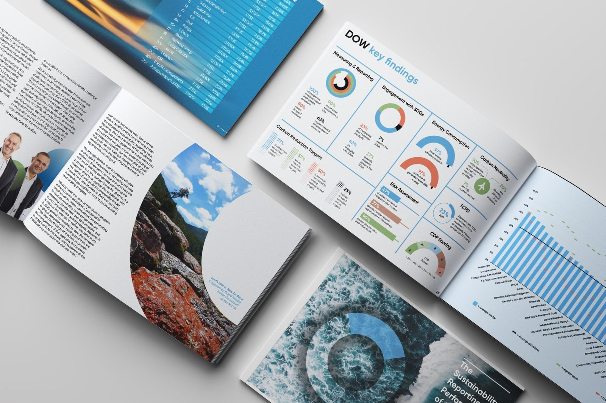
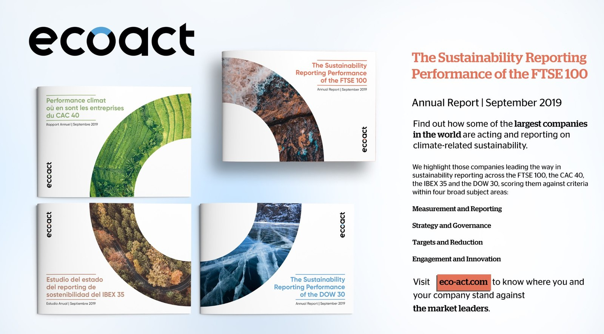
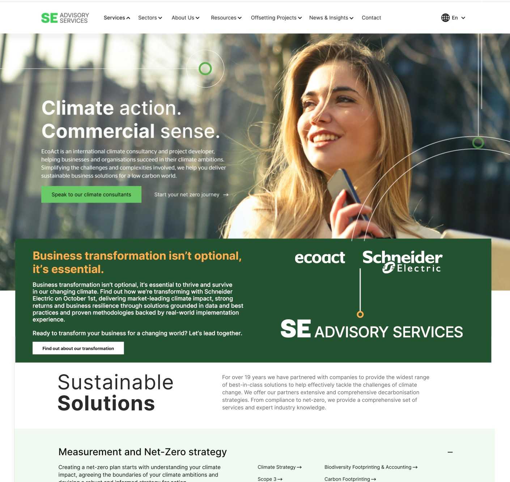

Report design, website rebrands and ad campaigns
A selection of the creative and campaign work produced for EcoAct / SE Advisory Services — covers and descriptions are being added as originals are sourced.


Annual Sustainability Report Design and Promotion
As part of the EcoAct team, we researched and reported on the sustainability reporting performance of the FTSE, DOW Jones, CAC and the IBEX (our 10th annual report from 2020 is still often number 1 in SERPs).

EcoAct Website Rebrand
Needs your input
What it was, your role, and the outcome — drop the real description in here.
Campaign cover
Retargeting Ad Campaign
I was tasked with creating engaging animations for our retargeting campaign as part of a wider ABM plan to ensure our key targets were recognising the new brand. It had been identified that without association with Schneider Electric, our new brand SE Advisory Services wasn't connecting with our target audience. Pinpointing those that were actively engaging with corporate sustainability topics and keywords and then following them around the internet was positioned as an "awareness first" campaign, however the ads delivered higher than expected clicks and led to inbound leads.
I worked closely with Joe for more than two years on major digital and marketing transformation projects. He is a strategic leader who excels at connecting business goals, customer experience, and technology to deliver meaningful results. Joe has a unique ability to align stakeholders, simplify complex challenges, and drive execution across cross-functional teams. His expertise in digital strategy, marketing technology, analytics, and customer experience, combined with his collaborative leadership style, makes him an exceptional partner for any organization navigating digital change.— Courtney O'Daniel
Joe is a rare find, both creatively gifted and analytical. While some marketers are happy to repeat the same playbook, Joe looks at the data and finds opportunities to truly improve performance. He is curious and will not settle for mediocre results. He is also digitally savvy and able to move quickly at the pace required in the AI era.— Sarah Gregg
I've worked with Joe for more than six years across 4 different brands and can confidently say that he is a true all-in-one marketing specialist, combining expertise in strategy, marketing technology, digital campaigns, and creative design. His unique vision and marketing insights have been invaluable across a wide range of projects - no matter the industry, scope, or challenge, he brings fresh thinking and undeniable positive impact.— Kai Larson